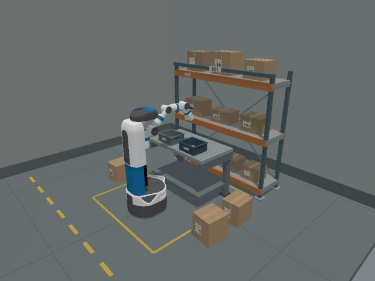
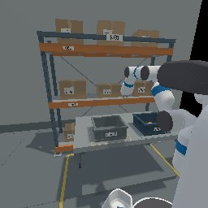
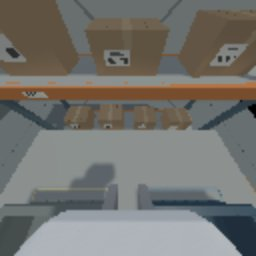
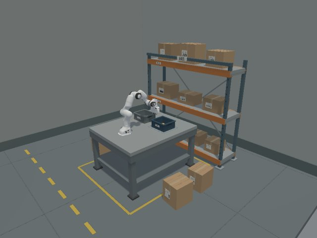
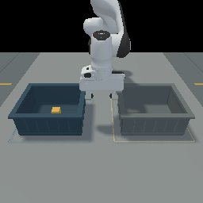
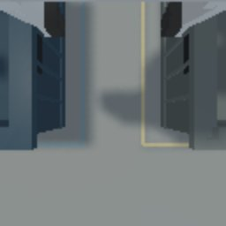
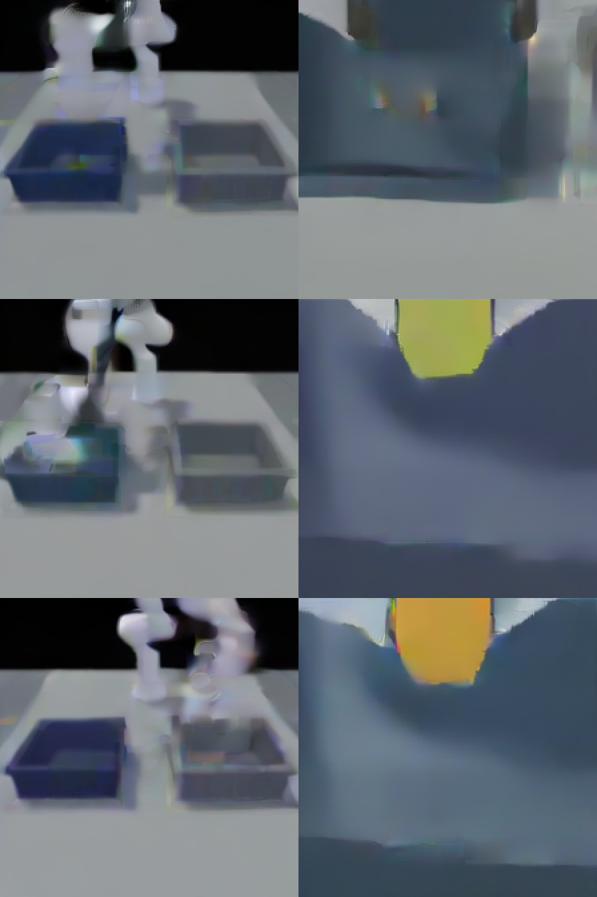

Benchmark for VLAs and world action models
Warehouse picking, evaluated the same way every time.
A simulation benchmark for robot foundation models on warehouse picking. Run your vision-language-action model or world action model as a server. The benchmark runs the tasks, robots and randomised scenes, and returns success rates with confidence intervals and a plain-English reason for every failed episode.
Quick start
Three commands from model to report
Your model runs as a websocket server in its own environment (the openpi protocol). The benchmark runs the simulator, sends observations, executes the returned actions and records everything.
In the commands below, python is the simulator environment's Python 3.10, set up once with bash scripts/payton/setup_sim_env.sh. On the lab machines: type bash, then source scripts/payton/wlb_env.sh, and use $WLB_SIM_ENV/bin/python.
python -m pipeline.cli listSuites (themed task sets), model cards, tasks and fine-tuning recipes.
python -m pipeline.cli evaluate \ --suite warehouse-prototype-v1 \ --model rbm_pi05Start the model's server first (the card's
serve line says how). The robot comes from the model card. Add --tasks A,B to choose tasks and --dry-run to see the plan first. --model scripted_oracle needs no server.open <eval dir>/evaluation.md # printed by evaluate
open <run dir>/report.html
Success per condition with 95% intervals, how far episodes got, and a reason and video per episode.Evaluating your own model takes a server and a model card: see Bring your model.
What is measured
Two suites, each a theme of tasks
A suite is a themed set of tasks, as in LIBERO and RoboCasa. It names no robot: each task lists one protocol per robot it supports, and the robot comes from your model card. Tasks your robot cannot run are skipped and listed in the report, and results for different robots are never pooled. evaluate runs every benchmark task unless you pass --tasks; draft tasks run with --include-drafts.
BinTransfer-v0 difficulty levels
| Level | What changes |
|---|---|
| D0 | training-like placement |
| D1 | wider object and bin pose jitter, robot start noise |
| D2 | D1 plus obstacles |
# configs/pipeline/tasks/BinTransfer-v0.yaml (excerpt) success: source: env.evaluate() predicates: all: - inside: {object: target, container: target_container} - in_workspace: {object: target} - not_grasped: {object: target} - held_for: steps: 10 all: - inside: {object: target, container: target_container} - still: {object: target, linear: 0.01, angular: 0.1}
The item must be inside the target bin, released, and still for 10 steps. python -m pipeline.cli check-success <run> replays the rule on recorded episodes and compares it with the environment's flag: 381/381 agree for BinTransfer-v0.
Robot tracks
A robot is a profile, not code
A profile lists the action and state layout, cameras, control rate, joint limits and end effector. It is checked line by line against the live simulator. Pick the track whose action space matches your model; fine-tuning covers the rest.



Fetch · fetch_rbm-pd_joint_pos-v1
- Robot
- Mobile manipulator (RoboBenchMart's Fetch)
- Cameras
- 2 head 256² + wrist 128²
- Actions
- 13-D joint targets, 20 Hz
- Gripper
- parallel, opens ~0.10 m
- Suites
- prototype and industrial (primary robot)
- For
- models trained on Fetch data (RoboBenchMart π0 / π0.5 / Octo), or any model fine-tuned on its demos



Panda · panda_cam-pd_ee_delta_pose-v1
- Robot
- Franka Panda arm at the same workstation
- Cameras
- front 256² + wrist 128²
- Actions
- 7-D end-effector deltas (
eef7-v1), 20 Hz - Gripper
- parallel, opens ~0.08 m
- Suites
- prototype (BinTransfer)
- For
- end-effector VLAs and world action models trained on LIBERO, DROID or Open X-Embodiment-style data
Adding a robot takes seven checked steps: the simulator builds the task with it, a profile, a contract test against the live simulator, a binding in each task card, one protocol per task with its own seeds, a scripted oracle that solves the task on it, and an entry in the suite. A frozen result never transfers to a new robot.
The profile's end effector also sets how outcomes are worded (a gripper "grasps", a suction cup "attaches"). evaluate --dry-run warns before running when an item is wider than the gripper opens.
Randomise SKUs and scenes, reproducibly
A condition is a variation file
Each axis is a constant, a choice or a range. Every episode draws its scene from its seed and saves it as scene.json, so the same seed always gives the same scene and episodes replay exactly. Item classes come from catalogues, including the four size classes of the industrial warehouse. The industrial suite lists its variation conditions per task: some run today, the rest are marked planned until its environment can build them.
# configs/pipeline/variations/sku-clutter-v1.yaml variation_id: sku-clutter-v1 base: D0 axes: sku: {catalogue: bintransfer-proxy-v1, classes: all, mass_kg: {low: 0.05, high: 0.30}} distractors: {count: {low: 2, high: 4}, classes: all} # configs/pipeline/variations/lighting-v1.yaml variation_id: lighting-v1 base: D0 axes: lighting: {intensity: {low: 0.4, high: 1.6}, color_temperature_k: {low: 3000, high: 7500}, ambient: {low: 0.5, high: 1.5}}
| Axis | Keys |
|---|---|
| sku | catalogue class, mass, friction, size scale |
| distractors | count, classes (never the target's), spacing |
| placement | object and bin position / yaw jitter |
| lighting | intensity, colour temperature, ambient |
| shelf | pick level, level heights, depth, bay and aisle width industrial suite |
| camera | field of view planned |
Bring your model
A server and a model card, for any kind of model
Used as a policy, every model is the same function: observations in, a chunk of actions out. Your model runs as a websocket server in its own environment, so the benchmark never imports its code or dependencies. A model card says which robot track it uses, how to talk to it and whether it is zero-shot or fine-tuned.
| Your server receives | |
|---|---|
observation/images/<camera> | every camera of the robot, uint8 |
observation/history/<camera> | the last k frames, when the card sets history: k |
observation/state | joint and gripper state |
prompt | the task instruction |
action_layout, embodiment | what to reply in, which robot |
| It replies with | |
|---|---|
actions | (N, D) chunk in that layout; eef7-v1 = Δposition, Δrotation, gripper, converted per robot |
predicted_frames | optional: a world action model's imagined frames, saved with each chunk |
On connecting, the server must say which checkpoint it serves (repository and revision); the run refuses a server that cannot, or whose name differs from the card's expected_model.
# configs/pipeline/model_cards/my_eef_model.yaml model_id: my_eef_model family: wam # vla | wam | other embodiment: panda_cam-pd_ee_delta_pose-v1 mode: zero_shot # or finetuned (+ training:) policy: kind: websocket adapter: generic adapter_options: {history: 4, output_layout: eef7-v1} host: 127.0.0.1 port: 8000 expected_model: my-eef-model
cp scripts/payton/servers/generic_model_server_template.py my_server.py
python my_server.py --port 8000 # in your model's env
python -m pipeline.cli evaluate --suite warehouse-prototype-v1 \
--model configs/pipeline/model_cards/my_eef_model.yaml
| Model type | How it connects | Run through it so far |
|---|---|---|
| VLA | openpi_fetch13 adapter (the openpi request format RoboBenchMart's models use) or generic; joint actions on Fetch, eef7-v1 on Panda | RoboBenchMart π0, π0.5 and Octo; π0.5 + LoRA |
| World action model | generic adapter with a frame history; optional predicted frames saved next to the real camera frames | Cosmos Policy (NVIDIA), UWM (UW / TRI), zero-shot and fine-tuned |
| Scripted oracle | in-process, reads true object poses; labelled privileged | shows each task is solvable; generates fine-tuning demos |
How much of each chunk runs
Models return a chunk of actions; the protocol's execution: {replan_every} decides how many run before the model is asked again: the whole chunk, or the first N steps. The Panda track has both: by default a run executes the protocol's setting, and --replan-every 8 runs 8 steps at a time (UWM's own setting). Results always state which.
World action models
There is no standard protocol for world action models yet: LIBERO, RoboCasa and RoboTwin 2.0 evaluate them as policies, and so does this benchmark, with the same tasks, seeds and success rule as VLAs. What they add, a frame history in and predicted frames out, is handled by the adapter and kept as evidence; it never changes the score.

Evaluation protocol
Zero-shot → fine-tune → evaluate again
Every model is first evaluated as released. To adapt it, the benchmark provides the demonstrations and a named recipe, like RoboTwin's fixed "train on clean demos, test Easy/Hard", so fine-tuned results from different models are comparable. Seeds are split by purpose: train 30000+, dev 0–4 per level for choosing checkpoints, and frozen test 10000–10019, run once per model. Click a step to see its command and what you can change.
The evaluation report
What one evaluation gives you
Every episode runs to a verdict from the environment's own success check. The report adds 95% intervals, a progress funnel per condition, failure labels and timing, and links a video and a one-sentence reason for every episode. Below: the 60 frozen test episodes of π0.5 + LoRA on BinTransfer-v0, recorded in one run.
Reading the results
Every episode says what happened
Beyond success, each episode gets a progress funnel (reached → grasped → lifted → in target → released → settled), a failure label and one sentence derived from the recorded trajectory, with the step and distance that show it. The same text is in each run's report.html and summary.csv, with a review.csv for adding your own label. Click a clip to enlarge it.
One set of rules, adapted to each task and each robot
Labels and stages come from three layers, so a new task or robot adds data to a card rather than code, and results stay comparable across tasks.
| Layer | What it decides | Where it lives | Example |
|---|---|---|---|
| Core | The six funnel stages and the shared failure labels | pipeline/metrics/taxonomy.py | never_grasped grasp_lost placed_not_settled |
| Task | Extra stages and labels for this task, written as conditions over the recorded episode, with a sentence template | task card diagnostics: | order picking: lifted 4 cm while held held_not_lifted wrong_item_picked |
| Robot | What holding an item is called and how outcomes are worded | robot profile end_effector | gripper "grasped", suction cup "attached to" |
# configs/pipeline/tasks/OrderPicking-v0.yaml (excerpt) diagnostics: stages: - name: lifted_while_held when: {ever: {flag: target_lift_observed}} labels: - name: wrong_item_picked when: {ever: {flag: wrong_object_interaction_observed}} explain: "Picked a distractor (step {step}) ..." - name: held_not_lifted when: {all: [{ever: {grasped: true}}, {not: {ever: {flag: target_lift_observed}}}]} explain: "The {tool} {held} the target but never lifted it 4 cm ..."
Task labels are tried before the core ones; missing evidence counts as unknown, never as false. Conditions: flag, grasped, in_target, near, lifted, all, any, not, ever.
Same episode, two robots' words. The measurement is identical; only the robot layer changes.
Near miss: the gripper got no closer than 0.07 m (step 48; it started 0.45 m away), but the grasp never closed on the target.
Near miss: the suction cup got no closer than 0.07 m (step 48; it started 0.45 m away), but the cup never sealed on the target.
Suction physics is not in the simulator yet; this shows the wording a suction robot's profile produces.
Reference results · BinTransfer-v0
Results
Reference runs that show what the numbers look like, not a leaderboard. Success is the strict flag, over all episodes, with Wilson 95% intervals. Dev = seeds 0–4 per level; test = the frozen 60 episodes. Fine-tuned rows name their recipe.
| Track | Model | Mode | Split | Overall | D0 | D1 | D2 |
|---|
Released models fail zero-shot on both tracks; on Fetch, the standard fine-tune (π0.5 + LoRA, standard-ft-v1) solves 46/60 test episodes. On Panda, fine-tuned UWM reaches the object in 9/15 dev episodes but does not complete the task. The oracle reads true object poses; it shows the task is solvable and is not a policy result.
Reference results · IndustrialShelfRetrieval-v0
Retrieval from a narrow-aisle rack
Retrieve a family-B carton from the middle shelf of the right-hand rack and place it in the order tote, within 2,400 steps. An episode ends at the first fatal collision, or as soon as the item leaves the shelf without being held. Dev seeds 301–303 are used for checkpoint selection; test seeds 701–702 are run once with the selected checkpoint. Out-of-range actions end the episode; clipping them instead gives the same results.
| Model | Mode | Split | Success | Closest gripper–item | How episodes ended |
|---|
The gripper starts about 1.15 m from the item. Zero-shot, no RoboBenchMart model gets closer than 0.92 m, even with out-of-range actions clipped instead of rejected. Fine-tuned on five scripted demonstrations (recipe industrial-ft-v0, train seeds 501–505, each replayed exactly before export), π0.5 + LoRA learns the approach: every episode brings the gripper within 0.12 m by step 120–150, shortly before the scripted oracle grasps (step 159), and then collides or nudges the item off the shelf. With five near-identical demonstrations, this fine-tune is expected to overfit. The final checkpoint and the test run are pending.
Design and roadmap
What is built, and what inspired it
Each row is one part of the benchmark: whether it is built yet, and where the idea comes from (an established benchmark, the industrial warehouse scenario, or new to this benchmark). Filter by status.
| Area | Specification | Status | Inspiration | What this benchmark adds |
|---|
Sources: LIBERO · LIBERO-Plus · VLABench · RoboTwin 2.0 · RoboCasa365 · RMBench · RoboBenchMart · Cosmos Policy · UWM · industrial scenario document.